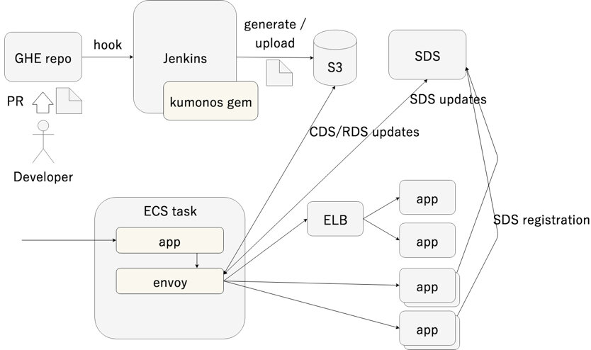
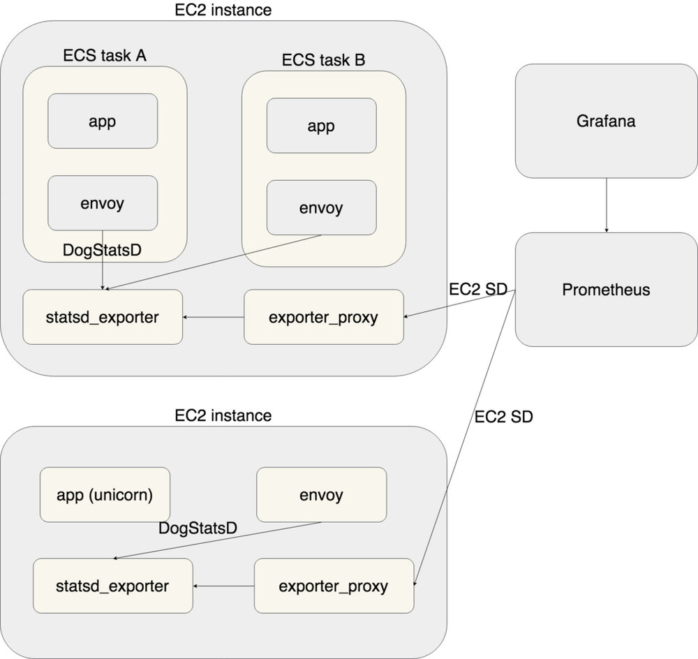
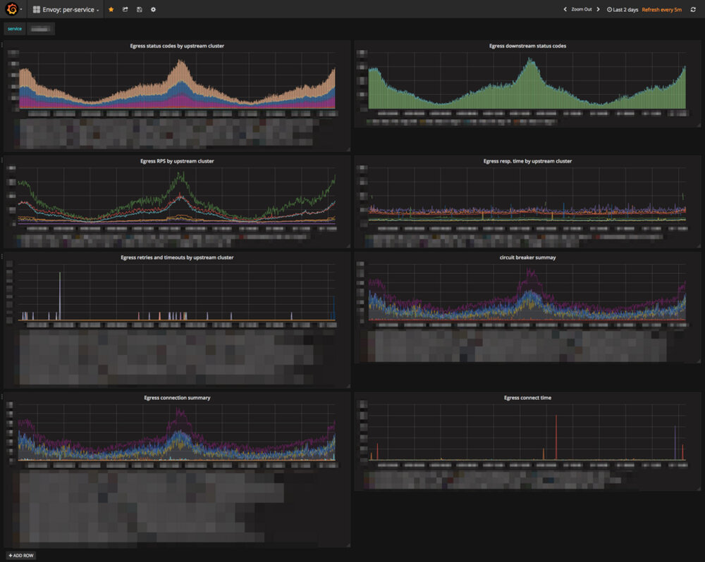
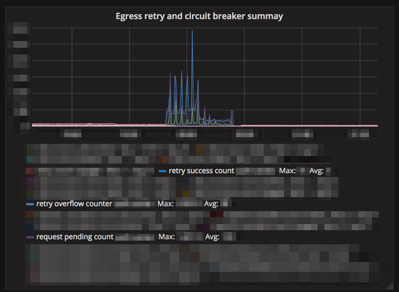
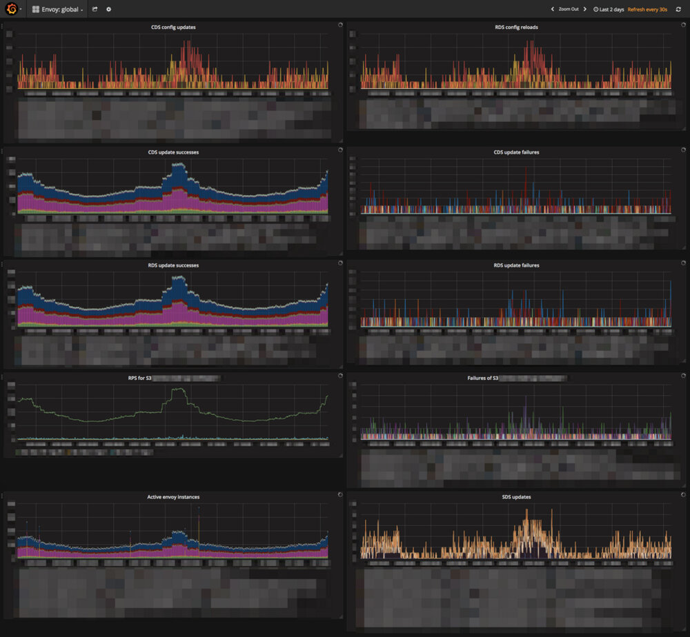
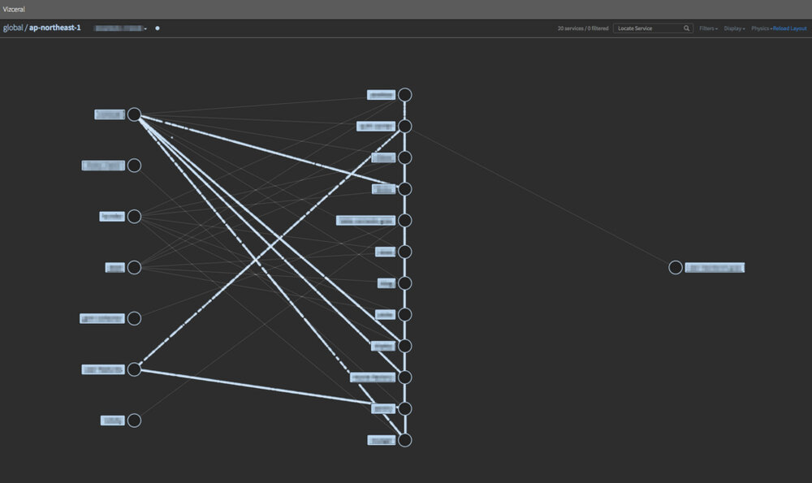
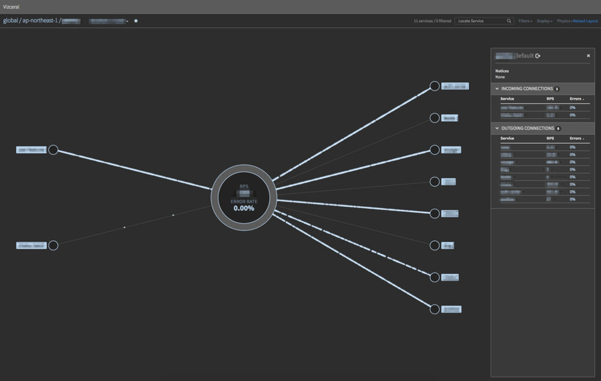
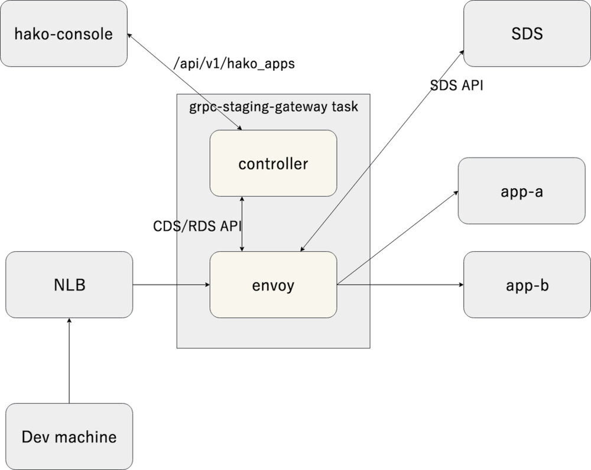

这个原文是 5 月初发表的日文原文的翻译。补充一下这篇文章的背景，Cookpad 是一家拥有 200 多种产品开发的中型科技公司，拥有 10 多支团队，每月平均用户数量达到 9000 万。https://www.cookpadteam.com/
你好，我是来自生产团队的开发人员Taiki。目前，我想介绍一下在 Cookpad 上构建和使用服务网格所获得的知识。
对于服务网格本身，我认为您将对以下文章，公告和教程有完整的了解：
- https://speakerdeck.com/taiki45/observability-service-mesh-and-microservices
- https://buoyant.io/2017/04/25/whats-a-service-mesh-and-why-do-i-need-one/
- https://blog.envoyproxy.io/service-mesh-data-plane-vs-control-plane-2774e720f7fc
- https://istioio.io/docs/setup/kubernetes/quick-start.html
- https://www.youtube.com/playlist?list=PLj6h78yzYM2P-3-xqvmWaZbbI1sW-ulZb
我们的目标
我们引入了一个服务网格来解决故障排除，容量规划和保持系统可靠性等操作问题。尤其是：
就第一个问题而言，随着规模的扩大，存在难以掌握哪个服务和哪个服务正在进行通信，某个服务的失败是哪里传播导致的问题。我认为这个问题应该通过综合管理服务在哪里和服务在哪里连接的相关信息来解决。
对于第二个问题而言，我们进一步深究了第一个问题，我们发现我们不知道一个服务与另一个服务之间的通信状态。例如，RPS、响应时间、成功/失败状态的数量、超时、断路器的激活状态等。在两个或更多个服务引用某个后端服务的情况下，因为它们未被请求源服务标记，所以会导致后端服务的代理解析或负载均衡器的度量标准信息不足。
对于第三个问题，“故障隔离尚未成功设置”。此时，在各应用程序中使用库，超时/重试·断路器的设置完成了。但是需要什么样的设置，必需单独查看应用程序代码。由于没有配置清单，会导致难以持续改进这些设置。另外，因为与故障隔离有关的设置应该不断改进，所以最好是可测试的，并且我们需要这样一个基础平台。
为了解决更高级的问题，我们还构建了gRPC 基础设施建设，配送跟踪处理委托，流量控制部署方式多样化，认证授权网关等功能。这部分将在稍后讨论。
当前状态
Cookpad 中的服务网格使用 Envoy 作为 data-plane，并创建了我们自己的 control-plane。尽管我们最初考虑安装已经作为服务网格实现的 Istio，但 Cookpad 中的应用程序大多数都使用名为 AWS ECS 的容器管理服务进行操作，因此与 Kubernetes 合作的优点是有限的。考虑到我们想实现的目标以及 Istio 软件本身的复杂性，我们选择了我们自己的 control-plane 的路径，该平面可以从小型起步。
此次实施的服务网格的 control-plane 分由几个组件组成。我将解释每个组件的角色和操作流程：
- 集中管理服务网格配置的存储库。
- 使用名为 kumonos 的 gem 从上面的设置文件生成 Envoy xDS API 响应 JSON
- 将生成的响应 JSON 放置在 Amazon S3 上，并将其用作 Envoy 的 xDS API
在中央存储库中管理该设置的原因是：
- 我们希望随时跟踪更改历史记录并在稍后跟踪记录它
- 我们希望能够通过跨组织团队（如 SRE 团队）来查看设置更改
关于负载均衡，我最初是为 Internal ELB 设计的，但 gRPC 应用程序的基础架构也符合要求（我们的 gRPC 应用程序已经在生产环境中使用此机制），我们使用 SDS（Service Discovery Service）API（简单地使用内部 ELB（NLB 或 TCP 模式 CLB）的 服务端侧负载均衡不均衡而在性能方面具有缺陷，并且在可获得的度量方面也是不够的）准备了客户端负载均衡。我们在 ECS 任务中部署了一个 sidecar 容器，用于对应用程序容器执行健康检查并在 SDS API 中注册连接目标信息。

度量指标（metric）的配置如下所示：
- 将所有指标存储到 Prometheus
- 使用 dog_statsd 将标记的度量标准发送到 ECS 容器主机实例上运行的 statsd_exporter （起初我将它作为我们自己的扩展实现，但后来我把这个修改作为补丁提交了）
- 所有指标都包含通过 固定字符串标签 的应用程序 ID 来标识每个节点 (这个是我们的另一个补丁)
- Prometheus 使用 EC2 SD 来提取 statsd_exporter 指标
- 要管理 Prometheus 的端口，我们在 statsd_exporter 和 Prometheus 之间使用 exporter_proxy
- 使用 Grafana 和 Vizceral 进行度量指标的可视化
如果您在不使用 ECS 或 Docker 的情况下直接在 EC2 实例上运行应用程序进程，则 Envoy 进程作为守护进程直接在实例中运行，但架构几乎相同。有一个原因是没有将 Prometheus 直接设置为 Envoy ，因为我们仍然无法从 Envoy 的 Prometheus 兼容端点中提取直方图度量。由于这将在未来得到改善，我们计划在当时消除 stasd_exporter。

在 Grafana 上，仪表板和 Envoy 的整个仪表板都为每项服务做好准备，例如上游 RPS 和超时发生。我们还将准备一个服务大小和服务粒度的仪表板。
每个服务的仪表板：

例如，上游故障时的断路器相关指标：

Envoy 的仪表板：

使用 Netflix 开发的 Vizceral 可视化服务配置。为了实现，我们开发了 promviz 和 promviz-front 的 fork（为了方便用 nginx 交付并符合 Cookpad 中的服务组合）。由于我们仅在某些服务中引入，因此当前显示的节点数量很少，但我们提供了以下仪表板。
每个 region 的服务配置图、RPS、错误率：

特定服务的 downstream/upstream：

另外，作为服务网格的一个子系统，你必须部署网关从开发商手中获得 staging 环境的 gRPC 服务器应用程序（假设使用客户端负载均衡进行访问，我们需要一个组件来解决它）。它是通过将 SDS API 和 Envoy 与管理称为 hako-console 的内部应用程序的软件相结合而构建的。
- Gateway app（Envoy）向 gateway controller 发送 xDS API 请求
- Gateway controller 从 hako-console 获取 staging 环境中的 gRPC 应用程序列表，并基于该响应返回Route Discovery Service/Cluster Discovery Service API 响应
- Gateway app 根据响应从 SDS API 获取实际连接目的地
- 从开发人员手中引用 AWS ELB Network Load Balancer，Gateway app 执行路由

效果
引入服务网格最显着的是它能够抑制临时故障的影响。有许多流量的服务之前有多个协作部分，到现在为止，200多个与网络相关的琐碎错误（与流量相比，这个数字非常小）在一小时内一直在不断地发生的（这是因为有些地方设置了重试），它们是由服务网格根据情况适当设置的的重试设置，他已经下降到每周1例左右。
从监测的角度来看，各种指标已经出现，但由于我们只是针对某些服务引入了这些指标，并且由于推出日期我们还没有达到全面使用，我们预计将来会使用它。在管理方面，因为服务之间的连接已经成为一个容易理解和可视化，因此我们希望通过将服务网格引入所有的应用服务来避免忽视和忽略对象。
将来的计划
迁移到 v2 API，转换到 Istio
由于 xDS API 的初始设计情况和使用 S3 作为后端交付的要求，xDS API 一直在使用 v1，但由于 v1 API 已被弃用，因此我们计划将其移至 v2。与此同时，我们正在考虑将 control-plane 移至 Istio。另外，如果我们要构建我们自己的 control-plane ，我们将使用 go-control-plane 来构建 LDS/RDS/CDS/EDS API。
替换反向代理
到目前为止，Cookpad 使用 nginx 作为反向代理，但是我们考虑到 nginx 和 Envoy 在内部技术实现、gRPC 通信和采集度量方面的差异，我们将考虑用 Envoy 替换 nginx 的反向代理和边缘代理。
流量控制
随着我们转向客户端负载均衡并取代反向代理，我们将能够通过操作 Envoy 更方便的处理流量，所以我们将能够实现金丝雀部署、流量转移和请求镜像。
故障注入
这是一个故意在正确管理的环境中注入延迟和故障的机制，并测试实际服务组是否可以正常工作。Envoy 有各种功能。
在 data-plane 层上执行分布式跟踪
在 Cookpad 里，AWS X-Ray 被用作分布式追踪系统。目前，我们将分布式跟踪功能作为一个库来实现，但我们计划将其移至 data-plane 并在服务网格层实现。
身份验证授权网关
这是为了仅在接收用户请求的最前端服务器进行认证和授权处理，随后的服务器将使用结果。以前，它不完全是作为一个库来实施的，但是通过转向 data-plane，我们可以获得过程模型的优点。
最后
我们已经介绍了Cookpad 中服务网格的现状和未来计划。许多功能已经可以很容易地实现，并且由于未来服务网格层可以完成更多的工作，因此强烈建议每个微服务系统都采用服务网格。